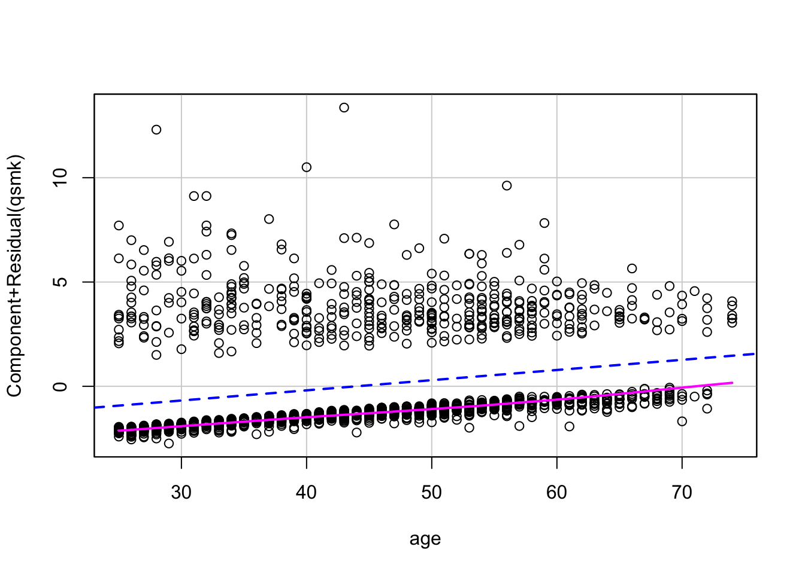
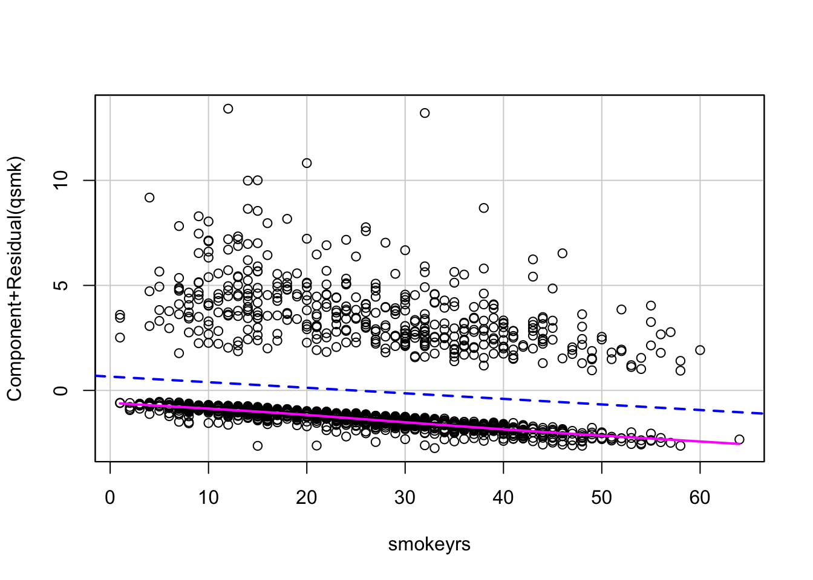
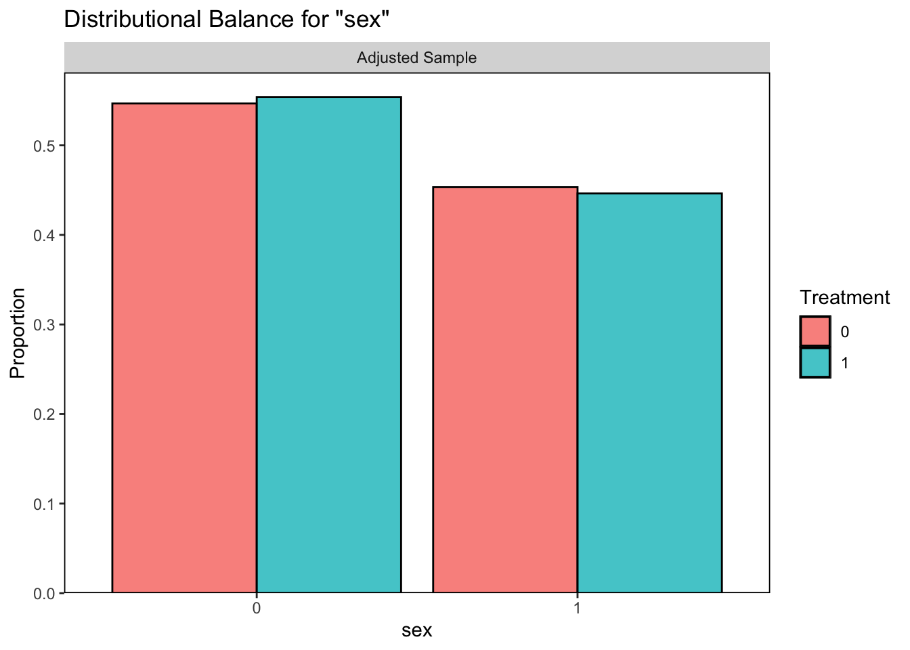
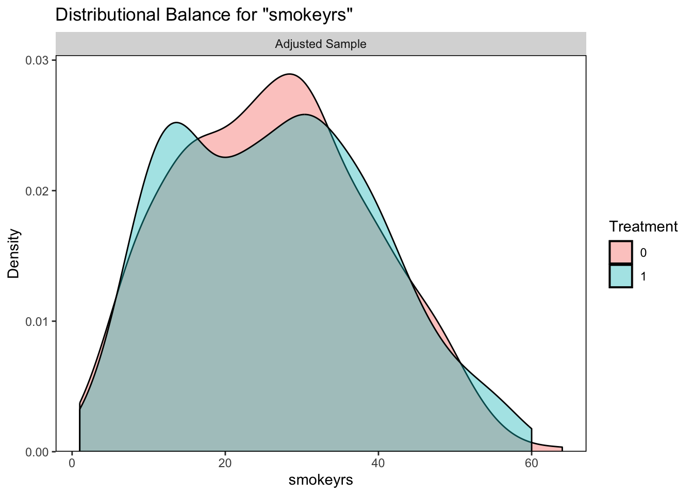

Module 6: Introduction to Causal Intference
Lab
Causal Interfence Introduction
Estimating Propensity Scores
First, we will look at how we can estimate propensity scores using the models we learned in previous modules including logistic regression and random forest.
Read in Data
This dataset was taken from the “What If?” textbook by Robins & Hernan (2024). The codebook can be found at this link.
Suppose we are interested in determining whether quitting smoking has a causal effect on weight gain. We are given this experimental data with important confounding variables such as smoking intensity, alcohol use, age, sex, race, education, and weight in 1971 that may impact individual’s probabilities of quitting smoking. Let’s account for these via propensity score analysis.
# we want education, exercise, and active to be factors
nhefs$education <- as.factor(nhefs$education)
nhefs$exercise <- as.factor(nhefs$exercise)
nhefs$active <- as.factor(nhefs$active)Now let’s look at missingness:
## seqn qsmk death yrdth
## 0.000000000 0.000000000 0.000000000 0.804788214
## modth dadth sbp dbp
## 0.802332719 0.802332719 0.047268263 0.049723757
## sex age race income
## 0.000000000 0.000000000 0.000000000 0.038060160
## marital school education ht
## 0.000000000 0.000000000 0.000000000 0.000000000
## wt71 wt82 wt82_71 birthplace
## 0.000000000 0.038674033 0.038674033 0.056476366
## smokeintensity smkintensity82_71 smokeyrs asthma
## 0.000000000 0.000000000 0.000000000 0.000000000
## bronch tb hf hbp
## 0.000000000 0.000000000 0.000000000 0.000000000
## pepticulcer colitis hepatitis chroniccough
## 0.000000000 0.000000000 0.000000000 0.000000000
## hayfever diabetes polio tumor
## 0.000000000 0.000000000 0.000000000 0.000000000
## nervousbreak alcoholpy alcoholfreq alcoholtype
## 0.000000000 0.000000000 0.000000000 0.000000000
## alcoholhowmuch pica headache otherpain
## 0.255985267 0.000000000 0.000000000 0.000000000
## weakheart allergies nerves lackpep
## 0.000000000 0.000000000 0.000000000 0.000000000
## hbpmed boweltrouble wtloss infection
## 0.000000000 0.000000000 0.000000000 0.000000000
## active exercise birthcontrol pregnancies
## 0.000000000 0.000000000 0.000000000 0.554327808
## cholesterol hightax82 price71 price82
## 0.009821977 0.056476366 0.056476366 0.056476366
## tax71 tax82 price71_82 tax71_82
## 0.056476366 0.056476366 0.056476366 0.056476366We might notice high levels of missingness in some columns. For those with moderate missingness, we can consider imputation while those with higher levels should be removed. However, it is important to look at the codebook to see if we can figure out why some of these have such high missingness. For instance, we will notice that alcoholhowmuch is missing for individuals who don’t use alcohol. We can impute this with 0 for these individuals.
# look at alcoholhowmuch across alcohol frequency
nhefs %>%
group_by(alcoholfreq) %>%
summarize(mean(alcoholhowmuch, na.rm=T))## # A tibble: 6 × 2
## alcoholfreq `mean(alcoholhowmuch, na.rm = T)`
## <int> <dbl>
## 1 0 3.18
## 2 1 3.66
## 3 2 3.38
## 4 3 2.6
## 5 4 NaN
## 6 5 NaN# impute alcoholhowmuch
nhefs <- nhefs %>%
mutate(alcoholhowmuch=case_when(
alcoholfreq==4~0,
alcoholfreq!=4~alcoholhowmuch
))For the purpose of this example, we will go ahead and just remove any observations with remaining missingness in the covariates of interest. However, in real applications, I would recommend imputing these values instead as long as the variable does not exhibit too high a percentage of missingness.
# now let's see how that improved missingness
apply(nhefs,2,function(x) sum(is.na(x)))/dim(nhefs)[1]## seqn qsmk death yrdth
## 0.000000000 0.000000000 0.000000000 0.804788214
## modth dadth sbp dbp
## 0.802332719 0.802332719 0.047268263 0.049723757
## sex age race income
## 0.000000000 0.000000000 0.000000000 0.038060160
## marital school education ht
## 0.000000000 0.000000000 0.000000000 0.000000000
## wt71 wt82 wt82_71 birthplace
## 0.000000000 0.038674033 0.038674033 0.056476366
## smokeintensity smkintensity82_71 smokeyrs asthma
## 0.000000000 0.000000000 0.000000000 0.000000000
## bronch tb hf hbp
## 0.000000000 0.000000000 0.000000000 0.000000000
## pepticulcer colitis hepatitis chroniccough
## 0.000000000 0.000000000 0.000000000 0.000000000
## hayfever diabetes polio tumor
## 0.000000000 0.000000000 0.000000000 0.000000000
## nervousbreak alcoholpy alcoholfreq alcoholtype
## 0.000000000 0.000000000 0.000000000 0.000000000
## alcoholhowmuch pica headache otherpain
## 0.128913444 0.000000000 0.000000000 0.000000000
## weakheart allergies nerves lackpep
## 0.000000000 0.000000000 0.000000000 0.000000000
## hbpmed boweltrouble wtloss infection
## 0.000000000 0.000000000 0.000000000 0.000000000
## active exercise birthcontrol pregnancies
## 0.000000000 0.000000000 0.000000000 0.554327808
## cholesterol hightax82 price71 price82
## 0.009821977 0.056476366 0.056476366 0.056476366
## tax71 tax82 price71_82 tax71_82
## 0.056476366 0.056476366 0.056476366 0.056476366Looking at Balance
Given that this dataset comes from an observational study, we should assess whether the covariates are balanced across our exposure groups (quit smoking/did not quit). To do this, we can use the cobalt package in R which has helpful functions bal.tab() and bal.plot().
# For bal.tab, we can supply it with our propensity score formula
bal.tab(qsmk ~ sex + race + age + education
+ smokeintensity + smokeyrs
+ exercise + active
+ wt71, data = nhefs, m.threshold=0.1)## Note: `s.d.denom` not specified; assuming "pooled".## Balance Measures
## Type Diff.Un M.Threshold.Un
## sex Binary -0.0858 Balanced, <0.1
## race Binary -0.0586 Balanced, <0.1
## age Contin. 0.3089 Not Balanced, >0.1
## education_1 Binary 0.0358 Balanced, <0.1
## education_2 Binary -0.0451 Balanced, <0.1
## education_3 Binary -0.0290 Balanced, <0.1
## education_4 Binary -0.0098 Balanced, <0.1
## education_5 Binary 0.0481 Balanced, <0.1
## smokeintensity Contin. -0.1999 Not Balanced, >0.1
## smokeyrs Contin. 0.1895 Not Balanced, >0.1
## exercise_0 Binary -0.0421 Balanced, <0.1
## exercise_1 Binary 0.0099 Balanced, <0.1
## exercise_2 Binary 0.0322 Balanced, <0.1
## active_0 Binary -0.0302 Balanced, <0.1
## active_1 Binary 0.0130 Balanced, <0.1
## active_2 Binary 0.0172 Balanced, <0.1
## wt71 Contin. 0.1354 Not Balanced, >0.1
##
## Balance tally for mean differences
## count
## Balanced, <0.1 13
## Not Balanced, >0.1 4
##
## Variable with the greatest mean difference
## Variable Diff.Un M.Threshold.Un
## age 0.3089 Not Balanced, >0.1
##
## Sample sizes
## Control Treated
## All 1201 428# alternatively, we can visualize the balance with bal.plot()
# sex plot
bal.plot(qsmk ~ sex + race + age + education
+ smokeintensity + smokeyrs
+ exercise + active
+ wt71, data = nhefs, var.name = "sex")
# age plot
bal.plot(qsmk ~ sex + race + age + education
+ smokeintensity + smokeyrs
+ exercise + active
+ wt71, data = nhefs, var.name = "age")
Propensity Score Estimation
We can estimate propensity scores for binary treatment variables using some of the methods we have learned in this course including logistic regression and random forest.
Logistic Regression
# fit the logistic regression
fit1 <- glm(qsmk ~ sex + race + age + education
+ smokeintensity + smokeyrs
+ exercise + active
+ wt71, data=nhefs, family=binomial())
summary(fit1)##
## Call:
## glm(formula = qsmk ~ sex + race + age + education + smokeintensity +
## smokeyrs + exercise + active + wt71, family = binomial(),
## data = nhefs)
##
## Coefficients:
## Estimate Std. Error z value Pr(>|z|)
## (Intercept) -2.385073 0.466849 -5.109 3.24e-07 ***
## sex -0.488430 0.141643 -3.448 0.000564 ***
## race -0.787093 0.202422 -3.888 0.000101 ***
## age 0.047264 0.009642 4.902 9.48e-07 ***
## education2 -0.134815 0.188703 -0.714 0.474963
## education3 -0.015591 0.168500 -0.093 0.926278
## education4 -0.006856 0.261048 -0.026 0.979047
## education5 0.373307 0.218472 1.709 0.087503 .
## smokeintensity -0.024142 0.005461 -4.421 9.83e-06 ***
## smokeyrs -0.027736 0.009736 -2.849 0.004386 **
## exercise1 0.292749 0.172534 1.697 0.089742 .
## exercise2 0.375542 0.178809 2.100 0.035708 *
## active1 0.021673 0.128655 0.168 0.866222
## active2 0.072929 0.207047 0.352 0.724663
## wt71 0.006345 0.004134 1.535 0.124785
## ---
## Signif. codes: 0 '***' 0.001 '**' 0.01 '*' 0.05 '.' 0.1 ' ' 1
##
## (Dispersion parameter for binomial family taken to be 1)
##
## Null deviance: 1876.3 on 1628 degrees of freedom
## Residual deviance: 1780.6 on 1614 degrees of freedom
## AIC: 1810.6
##
## Number of Fisher Scoring iterations: 4



# now extract the propensity score (i.e., predicted probability of quitting smoking)
ps_log1 <- predict(fit1, nhefs, type="response")We can also estimate these propensity scores with the matchit function from the MatchIt package, which will fit the logistic model for us. We can let it know to estimate propensity scores by setting distance = “glm”.
# we set method = NULL so that no matching will occur
m.out0 <- matchit(qsmk ~ sex + race + age + education
+ smokeintensity + smokeyrs +
exercise + active
+ wt71, data=nhefs,
method = NULL, distance = "glm")
ps_log2 <- m.out0$distanceWhat do our propensity scores look like? Let’s first see if the propensity scores we found are the same as those found by matchit. Then we can plot the distribution of the propensity score within each treatment group.
## [1] 1629# let's add this propensity score to nhefs as "ps_log"
nhefs$ps_log <- ps_log1
# plot of distribution of propensity scores within each treatment
# compare distributions of propensity scores for each group
ggplot(nhefs, aes(x = ps_log, group = as.factor(qsmk), fill=as.factor(qsmk))) +
geom_histogram(position = "stack", bins = 30, color = "black", alpha = 0.7) +
labs(
title = "Stacked Histogram of Propensity Scores by Treatment Group",
x = "Propensity Score",
y = "Count",
fill = "Quit Smoking?"
) +
theme_minimal()
Random Forest
Let’s fit a random forest model instead to calculate the propensity scores.
# Fit the random forest model
rf_model <- randomForest(as.factor(qsmk) ~ sex + race + age + education
+ smokeintensity + smokeyrs +
exercise + active
+ wt71, data=nhefs)
# Print the model summary
print(rf_model)##
## Call:
## randomForest(formula = as.factor(qsmk) ~ sex + race + age + education + smokeintensity + smokeyrs + exercise + active + wt71, data = nhefs)
## Type of random forest: classification
## Number of trees: 500
## No. of variables tried at each split: 3
##
## OOB estimate of error rate: 29.04%
## Confusion matrix:
## 0 1 class.error
## 0 1115 86 0.07160699
## 1 387 41 0.90420561Again, we can use the matchit function to fit this random forest for us by setting distance=“randomforest”.
# we set method = NULL so that no matching will occur
m.out.rf <- matchit(qsmk ~ sex + race + age + education
+ smokeintensity + smokeyrs +
exercise + active
+ wt71, data=nhefs,
method = NULL, distance = "randomforest")
ps_rf2 <- m.out.rf$distanceLet’s compare the propensity scores calculated via our random forest and the random forest in matchit.
## [1] 3# let's add this propensity score to nhefs as "ps_rf"
nhefs$ps_rf <- ps_rf1
# plot of distribution of propensity scores within each treatment
# compare distributions of propensity scores for each group
ggplot(nhefs, aes(x = ps_rf, group = as.factor(qsmk), fill=as.factor(qsmk))) +
geom_histogram(position = "stack", bins = 30, color = "black", alpha = 0.7) +
labs(
title = "Stacked Histogram of Propensity Scores by Treatment Group",
x = "Propensity Score",
y = "Count",
fill = "Quit Smoking?"
) +
theme_minimal()
Why are the propensity scores different for the random forest? Because of the ‘random’ part of random forest. We could have used set.seed() to avoid this.
Accounting for Propensity Scores
Now that we have our propensity scores we can use them in our analysis to estimate the causal effect of quitting smoking on weight gain.
Matching
First, we will look at an example of matching. The matchit function can conduct nearest matching for us by setting the method=“nearest”.
# we can set distance to a propensity score method as we did previously:
m.out1 <- matchit(qsmk ~ sex + race + age + education
+ smokeintensity + smokeyrs +
exercise + active
+ wt71, data=nhefs,
method = "nearest", distance = "glm")
m.out1 # notice that our matched sample is quite a bit smaller## A `matchit` object
## - method: 1:1 nearest neighbor matching without replacement
## - distance: Propensity score
## - estimated with logistic regression
## - number of obs.: 1629 (original), 856 (matched)
## - target estimand: ATT
## - covariates: sex, race, age, education, smokeintensity, smokeyrs, exercise, active, wt71# or we can set distance to a pre-calculated propensity score:
m.out2 <- matchit(qsmk ~ sex + race + age + education
+ smokeintensity + smokeyrs +
exercise + active
+ wt71, data=nhefs,
method = "nearest", distance = nhefs$ps_rf)
m.out2 # notice that our matched sample is quite a bit smaller## A `matchit` object
## - method: 1:1 nearest neighbor matching without replacement
## - distance: User-defined - number of obs.: 1629 (original), 856 (matched)
## - target estimand: ATT
## - covariates: sex, race, age, education, smokeintensity, smokeyrs, exercise, active, wt71Now we can re-check the covariate balance in our new matched sample.
# 1. for logistic regression propensity score
# covariate balance summary table
bal.tab(m.out1, m.threshold=0.1)## Balance Measures
## Type Diff.Adj M.Threshold
## distance Distance 0.0325 Balanced, <0.1
## sex Binary -0.0070 Balanced, <0.1
## race Binary 0.0140 Balanced, <0.1
## age Contin. 0.0112 Balanced, <0.1
## education_1 Binary 0.0304 Balanced, <0.1
## education_2 Binary 0.0140 Balanced, <0.1
## education_3 Binary -0.0374 Balanced, <0.1
## education_4 Binary -0.0047 Balanced, <0.1
## education_5 Binary -0.0023 Balanced, <0.1
## smokeintensity Contin. -0.0358 Balanced, <0.1
## smokeyrs Contin. 0.0192 Balanced, <0.1
## exercise_0 Binary -0.0280 Balanced, <0.1
## exercise_1 Binary -0.0140 Balanced, <0.1
## exercise_2 Binary 0.0421 Balanced, <0.1
## active_0 Binary -0.0187 Balanced, <0.1
## active_1 Binary 0.0187 Balanced, <0.1
## active_2 Binary 0.0000 Balanced, <0.1
## wt71 Contin. 0.0260 Balanced, <0.1
##
## Balance tally for mean differences
## count
## Balanced, <0.1 18
## Not Balanced, >0.1 0
##
## Variable with the greatest mean difference
## Variable Diff.Adj M.Threshold
## exercise_2 0.0421 Balanced, <0.1
##
## Sample sizes
## Control Treated
## All 1201 428
## Matched 428 428
## Unmatched 773 0

# 2. for random forest propensity score
# covariate balance summary table
bal.tab(m.out2, m.threshold=0.1)## Balance Measures
## Type Diff.Adj M.Threshold
## distance Distance 0.0017 Balanced, <0.1
## sex Binary -0.0397 Balanced, <0.1
## race Binary -0.0561 Balanced, <0.1
## age Contin. 0.2266 Not Balanced, >0.1
## education_1 Binary 0.0117 Balanced, <0.1
## education_2 Binary -0.0047 Balanced, <0.1
## education_3 Binary -0.0280 Balanced, <0.1
## education_4 Binary -0.0070 Balanced, <0.1
## education_5 Binary 0.0280 Balanced, <0.1
## smokeintensity Contin. -0.1660 Not Balanced, >0.1
## smokeyrs Contin. 0.1465 Not Balanced, >0.1
## exercise_0 Binary -0.0350 Balanced, <0.1
## exercise_1 Binary 0.0257 Balanced, <0.1
## exercise_2 Binary 0.0093 Balanced, <0.1
## active_0 Binary 0.0023 Balanced, <0.1
## active_1 Binary -0.0164 Balanced, <0.1
## active_2 Binary 0.0140 Balanced, <0.1
## wt71 Contin. 0.0820 Balanced, <0.1
##
## Balance tally for mean differences
## count
## Balanced, <0.1 15
## Not Balanced, >0.1 3
##
## Variable with the greatest mean difference
## Variable Diff.Adj M.Threshold
## age 0.2266 Not Balanced, >0.1
##
## Sample sizes
## Control Treated
## All 1201 428
## Matched 428 428
## Unmatched 773 0

It looks like our logistic regression did a better job of correcting the balance between those who quit smoking and those who did not so we will continue with this option.
Now let’s estimate the effect of quitting smoking on weight gain in the matched sample from m.out1.
# extract the matched data
matched <- match.data(m.out1)
# estimate ATT with linear regression model
match_lm <- lm(wt82_71~qsmk, data=matched)
summary(match_lm) # significant treatment effect in matched sample##
## Call:
## lm(formula = wt82_71 ~ qsmk, data = matched)
##
## Residuals:
## Min 1Q Median 3Q Max
## -30.327 -4.120 -0.171 4.478 42.986
##
## Coefficients:
## Estimate Std. Error t value Pr(>|t|)
## (Intercept) 1.3014 0.3911 3.327 0.000916 ***
## qsmk 3.2236 0.5572 5.785 1.03e-08 ***
## ---
## Signif. codes: 0 '***' 0.001 '**' 0.01 '*' 0.05 '.' 0.1 ' ' 1
##
## Residual standard error: 7.968 on 816 degrees of freedom
## (38 observations deleted due to missingness)
## Multiple R-squared: 0.0394, Adjusted R-squared: 0.03822
## F-statistic: 33.47 on 1 and 816 DF, p-value: 1.033e-08We could also go ahead and conduct our model diagnostics here to make sure that our model fits the data well.

## 260 213
## 139 114
We see in the plots that the residuals are not normally distributed which could be due to the fact that we only have one binary predictor which does not explain our data very well (R2=0.033). We can add in some of the covariates that we think might explain our outcome better if we wanted to try and improve model fit.
Stratified
We can create strata based on the propensity scores we calculated previously. Let’s use the logistic regression propensity scores again.
# calculation of deciles
nhefs$ps.dec <- cut(nhefs$ps_log,
breaks=c(quantile(nhefs$ps_log, probs=seq(0,1,0.1))),
labels=seq(1:10),
include.lowest=TRUE)
# how many in each strata?
table(nhefs$ps.dec)##
## 1 2 3 4 5 6 7 8 9 10
## 163 163 163 163 163 162 163 163 163 163Now we want to check the balance within each strata. We can use the cluster argument in bal.tab to do this.
# check balance within strata
bal.tab(qsmk ~ sex + race + age + education
+ smokeintensity + smokeyrs
+ exercise + active
+ wt71, data = nhefs, m.threshold=0.1, cluster=nhefs$ps.dec)We can see that the balancing did not work for every strata. We can try playing around with the strata number to see if we can improve upon these results. For instance, we could use quantiles instead of deciles,
nhefs$ps.dec2 <- cut(nhefs$ps_log,
breaks=c(quantile(nhefs$ps_log, probs=seq(0,1,0.2))),
labels=seq(1:5),
include.lowest=TRUE)For now, let’s stick with our 10 initial strata and estimate the treatment effect. The first method is to look at the treatment effect within each strata. To do this, let’s conduct a t.test within each strata.
# set up for loop for t test
for (i in 1:10) {
print(t.test(wt82_71~qsmk, data=nhefs[nhefs$ps.dec==i,]))
}Alternatively, we can include the clusters in a regression model with or without an interaction between strata and treatment. We will also include some of the covariates that were not properly balanced to make sure we are accounting for them.
# Fit linear model for treatment effect
strat_mod <- lm(wt82_71~qsmk+ps.dec+wt71+smokeintensity+smokeyrs, data=nhefs)
summary(strat_mod)##
## Call:
## lm(formula = wt82_71 ~ qsmk + ps.dec + wt71 + smokeintensity +
## smokeyrs, data = nhefs)
##
## Residuals:
## Min 1Q Median 3Q Max
## -42.237 -3.949 -0.188 3.960 46.159
##
## Coefficients:
## Estimate Std. Error t value Pr(>|t|)
## (Intercept) 9.11744 1.10622 8.242 3.56e-16 ***
## qsmk 3.31036 0.44858 7.380 2.58e-13 ***
## ps.dec2 -0.12982 0.85836 -0.151 0.87980
## ps.dec3 -0.39237 0.86324 -0.455 0.64951
## ps.dec4 0.44004 0.86500 0.509 0.61102
## ps.dec5 0.08647 0.88067 0.098 0.92180
## ps.dec6 -0.24376 0.89186 -0.273 0.78465
## ps.dec7 0.37505 0.91970 0.408 0.68348
## ps.dec8 -1.44770 0.93304 -1.552 0.12096
## ps.dec9 -2.21550 0.96359 -2.299 0.02162 *
## ps.dec10 -2.58065 0.99414 -2.596 0.00952 **
## wt71 -0.06733 0.01324 -5.086 4.10e-07 ***
## smokeintensity 0.02110 0.01825 1.156 0.24791
## smokeyrs -0.09759 0.01763 -5.536 3.63e-08 ***
## ---
## Signif. codes: 0 '***' 0.001 '**' 0.01 '*' 0.05 '.' 0.1 ' ' 1
##
## Residual standard error: 7.53 on 1552 degrees of freedom
## (63 observations deleted due to missingness)
## Multiple R-squared: 0.09435, Adjusted R-squared: 0.08676
## F-statistic: 12.44 on 13 and 1552 DF, p-value: < 2.2e-16Inverse Probability Weighting
For inverse probability weighting, we need to calculate the weights given the propensity scores as
\(w_i = \frac{A_i}{\pi_i}+\frac{(1-A_i)}{1-\pi_i},\)
where \(A_i\) is the treatment level for individual i and \(\pi_i\) is the propensity score for individual i.
# with the propensity scores, let's calculate the weights
nhefs <- nhefs %>%
mutate(weights = case_when(qsmk==1~1/ps_log,
qsmk==0~1/(1-ps_log)))
nhefs$weights
# let's visualize the weights
hist(nhefs$weights)

# let's look at the treatment and propensity score for largest weight and smallest weight
nhefs[which.min(nhefs$weights), c("ps_log", "qsmk")]
nhefs[which.max(nhefs$weights), c("ps_log", "qsmk")]Now that we have our weights, we can check the balance in the weighted sample using the weights argument in bal.tab
# now check balance in weighted sample
bal.tab(qsmk ~ sex + race + age + education
+ smokeintensity + smokeyrs
+ exercise + active
+ wt71, data = nhefs, m.threshold=0.1, weights=nhefs$weights)## Note: `s.d.denom` not specified; assuming "pooled".## Balance Measures
## Type Diff.Adj M.Threshold
## sex Binary -0.0039 Balanced, <0.1
## race Binary 0.0007 Balanced, <0.1
## age Contin. 0.0184 Balanced, <0.1
## education_1 Binary -0.0087 Balanced, <0.1
## education_2 Binary 0.0031 Balanced, <0.1
## education_3 Binary -0.0051 Balanced, <0.1
## education_4 Binary 0.0081 Balanced, <0.1
## education_5 Binary 0.0025 Balanced, <0.1
## smokeintensity Contin. -0.0006 Balanced, <0.1
## smokeyrs Contin. 0.0151 Balanced, <0.1
## exercise_0 Binary -0.0065 Balanced, <0.1
## exercise_1 Binary 0.0179 Balanced, <0.1
## exercise_2 Binary -0.0114 Balanced, <0.1
## active_0 Binary -0.0075 Balanced, <0.1
## active_1 Binary 0.0140 Balanced, <0.1
## active_2 Binary -0.0065 Balanced, <0.1
## wt71 Contin. 0.0014 Balanced, <0.1
##
## Balance tally for mean differences
## count
## Balanced, <0.1 17
## Not Balanced, >0.1 0
##
## Variable with the greatest mean difference
## Variable Diff.Adj M.Threshold
## age 0.0184 Balanced, <0.1
##
## Effective sample sizes
## Control Treated
## Unadjusted 1201. 428.
## Adjusted 1172.8 360.04Finally, let’s estimate the treatment effect again.
# now we can fit our linear model to the weighted sample
weight_lm <- lm(wt82_71~qsmk, weights=weights, data=nhefs)
summary(weight_lm)##
## Call:
## lm(formula = wt82_71 ~ qsmk, data = nhefs, weights = weights)
##
## Weighted Residuals:
## Min 1Q Median 3Q Max
## -51.682 -5.334 0.049 5.209 85.111
##
## Coefficients:
## Estimate Std. Error t value Pr(>|t|)
## (Intercept) 1.7685 0.2863 6.177 8.33e-10 ***
## qsmk 3.4036 0.4076 8.351 < 2e-16 ***
## ---
## Signif. codes: 0 '***' 0.001 '**' 0.01 '*' 0.05 '.' 0.1 ' ' 1
##
## Residual standard error: 11.36 on 1564 degrees of freedom
## (63 observations deleted due to missingness)
## Multiple R-squared: 0.04268, Adjusted R-squared: 0.04207
## F-statistic: 69.73 on 1 and 1564 DF, p-value: < 2.2e-16Lab Completed!
Congratulations! You have completed Lab 6!